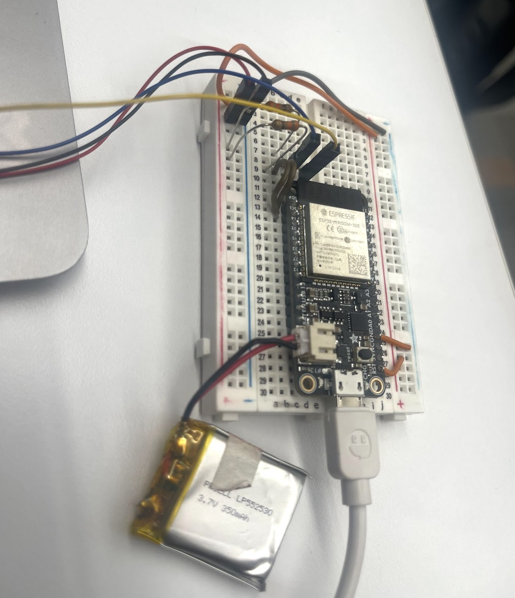
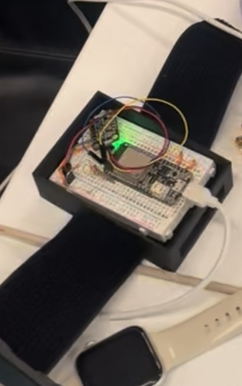
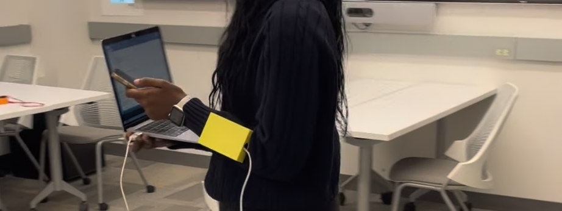
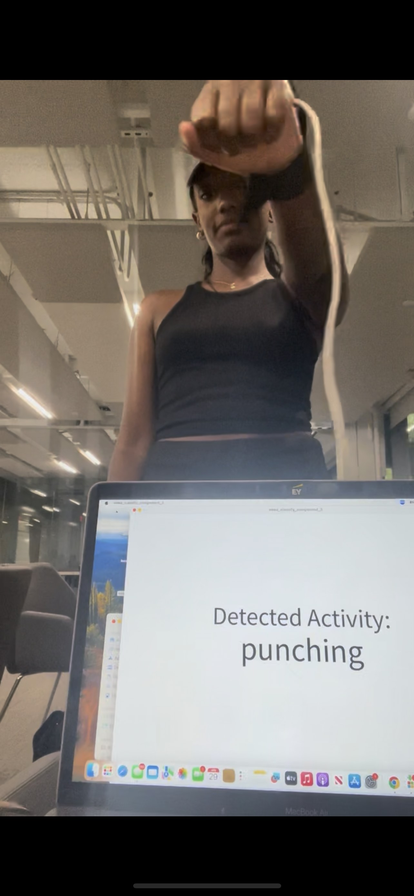
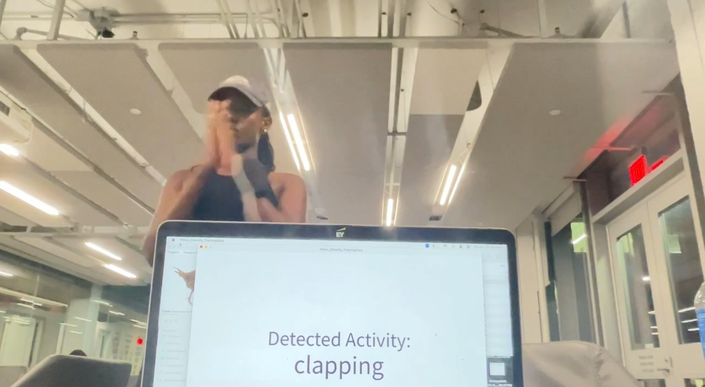
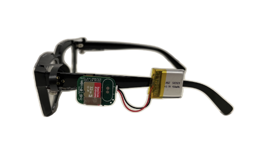

Building beyond the screen
I spend a lot of time working with things that live on a screen, so I love the occasional excuse to build something physical: CAD, 3D printing, electronics, and the very humbling process of figuring out why version one absolutely does not work.
Case 01: A wearable that learned to count steps and recognize movement
A wrist-worn device I designed and built end-to-end: CAD model, 3D-printed enclosure, electronics, sensor data, and a machine-learning model on top of it.
Fusion 3603D PrintingESP32MPU6050 IMUWekaKNN / SVM / Decision Trees
I wanted a wearable that could collect real motion data without being bulky, so I designed the enclosure around the sensing system instead of treating hardware and case as separate problems. It needed to hold an ESP32 and an MPU6050 IMU securely (too much wobble on the wrist would show up as noise in the sensor readings) and stay comfortable for extended wear.
One early design decision mattered more than I expected: I separated the battery from the wrist enclosure instead of trying to fit everything on the wrist at once. That kept the wrist unit smaller, distributed the weight better, and reduced the extra movement that was throwing off the IMU readings.



Firmware and live streaming
The ESP32 reads the MPU6050 over I2C (accelerometer set to ±8G, gyroscope to ±500°/s, with a 21Hz low-pass filter to cut high-frequency noise at the source) and streams all six axes over Bluetooth Serial in real time, so I could record from the wearable without ever plugging it in. A small Processing sketch on the laptop side listens on that Bluetooth port and logs everything to a timestamped CSV: that's the raw pipeline behind every dataset below.
Step detection
Raw accelerometer data is noisy; treating every local peak as a step would massively overcount. I built a pipeline: sliding window → low-pass filter → peak detection → prominence filtering → duplicate removal → step count, and compared different filter cutoffs, since too aggressive a filter smooths away real steps and too light a filter lets noise through as false ones.
Activity recognition
I pushed further and tried to get the wearable to tell activities apart, not just count steps. I collected motion data for five activities (punching, kicking, arm circles, clapping, jumping jacks) at about 70 Hz, 20 samples each, then extracted 6 statistical features (max, min, mean, variance, standard deviation, zero-crossing rate) from each of the 6 IMU axes, for 36 features per movement.
Model selection
I compared KNN, SVM, and a J48 decision tree with 10-fold cross-validation, using Weka's classifier library called directly from Processing. KNN with K=5 had the lowest mean absolute error among the KNN configurations I tried, so that's what went into the real-time implementation: a real comparison, not just "I used the first algorithm that worked."


The code and a couple of raw recording sessions are here if you want to see the actual pipeline rather than just the description of it:
What I'd change in a V2: a smaller, more integrated enclosure, a lot more activity data from multiple people instead of mostly my own movements, and testing on people who weren't part of the training data at all, all to find out whether the model actually recognizes the activity, or just recognizes how I move.
Case 02: Small CAD experiments
Not every build needs to be a full case study. A couple of smaller pieces where the CAD screenshots do most of the talking.
Cornell ring: Fusion 360
A custom ring modeled from scratch, with Cornell branding built directly into the geometry rather than added after.
Custom phone case: Fusion 360
Modeled from dimensions up: wall thickness, rounded edges, camera clearance, button openings, and prepared for fabrication.
What I like about CAD is that it forces a different kind of thinking than software does. A tiny dimensional mistake means something doesn't fit or doesn't move; it turns design into a physical problem, not just something that has to look right on a screen.
Case 03: Wearables, privacy & AI (research)
A different kind of "build": designing a wearable specifically to study how people react to it, not just to make it work.
I researched how people perceive AI-enabled wearables when a device collects only the wearer's data versus when it can also sense the surrounding environment and the people in it, and compared smartwatch-style personal tracking against AI glasses across both wearers and bystanders. Read the full write-up on the privacy research project page.

Design takeaway
People consistently wanted visible recording indicators, clearer controls over what's being recorded, and plain explanations of how the data would be used. That's the thread connecting this to the things I build: I care about making the technology work, and about being honest with people about what it's doing.